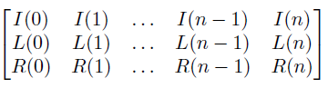

Piecewise linear quadratic (plq), evaluate a plq function on a grid
[y, k] = plq_eval(plqf,X)
matrix. A plq function with dimensions n x 4.
column vector. A grid of points on which the function is sampled.
column vector. A grid of points on which the plq function is evaluated on.
matrix. A 3 x n matrix with information about which pieces of the plq function contained which X points.
Evaluates a plq function on a grid. This function is necessary as it allows the plq functions to be simplified into more manageable data with scilab functions such as plotting.
k is a matrix shaped like the following, with a column for each unique piece of the plq function an X value was in. For the i'th unique piece, the values X(L(i):R(i)) were evaluated using the I(i)'th row of the plq function.

Yves Lucet, University of British Columbia, BC, Canada